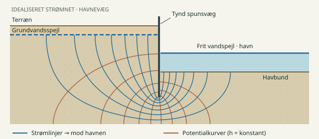

Emneområde C
Grundvandsstrømning
Undersøg vandets strømning og betydning for jordens stabilitet.

Selvstændige øvelser om grundvandsstrømning er planlagt. Start med de eksisterende øvelser om poretryk og konsolidering under Relaterede øvelser.
Potentiale og permeabilitet
Fra vandstand og hydraulisk gradient til strømning gennem jord.
Planlagte emner · øvelser kommer senere
- Hydraulisk potentiale og gradient
- Darcys lov og permeabilitet
- Strømning i lagdelt jord
Strømnet og stabilitet
Undersøg strømningsveje omkring konstruktioner og ændringer i grundvandsstanden.
Planlagte emner · øvelser kommer senere
- Strømnet under vægge og gennem dæmninger
- Strømningskræfter og hydraulisk grundbrud
- Grundvandssænkning